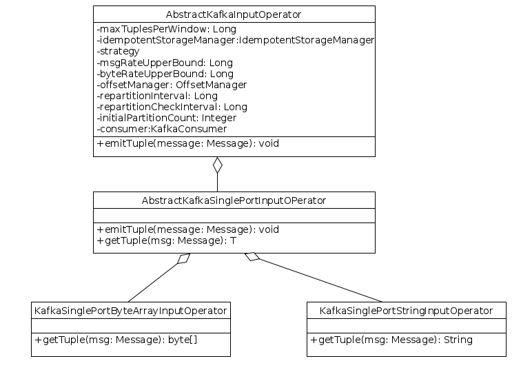

Kafka Input Operator
Introduction
This is an input operator that consumes data from Kafka messaging system for further processing in Apex. Kafka Input Operator is a fault-tolerant and scalable Malhar Operator.
Why is it needed ?
Kafka is a pull-based and distributed publish subscribe messaging system, topics are partitioned and replicated across nodes. Kafka input operator is needed when you want to read data from multiple partitions of a Kafka topic in parallel in an Apex application.
AbstractKafkaInputOperator
This is the abstract implementation that serves as base class for consuming messages from Kafka messaging system. This class doesn’t have any ports.

Configuration Parameters
Parameter |
Description |
maxTuplesPerWindow |
Controls the maximum number of messages emitted in each streaming window from this operator. Minimum value is 1. Default value = MAX_VALUE |
idempotentStorageManager |
This is an instance of IdempotentStorageManager. Idempotency ensures that the operator will process the same set of messages in a window before and after a failure. For example, let's say the operator completed window 10 and failed somewhere between window 11. If the operator gets restored at window 10 then it will process the same messages again in window 10 which it did in the previous run before the failure. Idempotency is important but comes with higher cost because at the end of each window the operator needs to persist some state with respect to that window. Default Value = com.datatorrent.lib.io.IdempotentStorageManager. |
strategy |
Operator supports two types of partitioning strategies, ONE_TO_ONE and ONE_TO_MANY. ONE_TO_ONE: If this is enabled, the AppMaster creates one input operator instance per Kafka topic partition. So the number of Kafka topic partitions equals the number of operator instances. ONE_TO_MANY: The AppMaster creates K = min(initialPartitionCount, N) Kafka input operator instances where N is the number of Kafka topic partitions. If K is less than N, the remaining topic partitions are assigned to the K operator instances in round-robin fashion. If K is less than initialPartitionCount, the AppMaster creates one input operator instance per Kafka topic partition. For example, if initialPartitionCount = 5 and number of Kafka partitions(N) = 2 then AppMaster creates 2 Kafka input operator instances. Default Value = ONE_TO_ONE |
msgRateUpperBound |
Maximum messages upper bound. Operator repartitions when the msgProcessedPS exceeds this bound. msgProcessedPS is the average number of messages processed per second by this operator. |
byteRateUpperBound |
Maximum bytes upper bound. Operator repartitions when the bytesPS exceeds this bound. bytesPS is the average number of bytes processed per second by this operator. |
offsetManager |
This is an optional parameter that is useful when the application restarts or start at specific offsets (offsets are explained below) |
repartitionInterval |
Interval specified in milliseconds. This value specifies the minimum time required between two repartition actions. Default Value = 30 Seconds |
repartitionCheckInterval |
Interval specified in milliseconds. This value specifies the minimum interval between two offset updates. Default Value = 5 Seconds |
initialPartitionCount |
When the ONE_TO_MANY partition strategy is enabled, this value indicates the number of Kafka input operator instances. Default Value = 1 |
consumer |
This is an instance of com.datatorrent.contrib.kafka.KafkaConsumer. Default Value = Instance of SimpleKafkaConsumer. |
Abstract Methods
void emitTuple(Message message): Abstract method that emits tuples extracted from Kafka message.
KafkaConsumer
This is an abstract implementation of Kafka consumer. It sends the fetch requests to the leading brokers of Kafka partitions. For each request, it receives the set of messages and stores them into the buffer which is ArrayBlockingQueue. SimpleKafkaConsumer which extends KafkaConsumer and serves the functionality of Simple Consumer API and HighLevelKafkaConsumer which extends KafkaConsumer and serves the functionality of High Level Consumer API.
Pre-requisites
This operator referred the Kafka Consumer API of version 0.8.1.1. So, this operator will work with any 0.8.x and 0.7.x version of Apache Kafka.
Configuration Parameters
Parameter |
Type |
Default |
Description |
zookeeper |
String |
Specifies the zookeeper quorum of Kafka clusters that you want to consume messages from. zookeeper is a string in the form of hostname1:port1,hostname2:port2,hostname3:port3 where hostname1,hostname2,hostname3 are hosts and port1,port2,port3 are ports of zookeeper server. If the topic name is the same across the Kafka clusters and want to consume data from these clusters, then configure the zookeeper as follows: c1::hs1:p1,hs2:p2,hs3:p3;c2::hs4:p4,hs5:p5,c3::hs6:p6 where c1,c2,c3 indicates the cluster names, hs1,hs2,hs3,hs4,hs5,hs6 are zookeeper hosts and p1,p2,p3,p4,p5,p6 are corresponding ports. Here, cluster name is optional in case of single cluster |
|
cacheSize |
int |
1024 |
Maximum of buffered messages hold in memory. |
topic |
String |
default_topic |
Indicates the name of the topic. |
initialOffset |
String |
latest |
Indicates the type of offset i.e, “earliest or latest”. If initialOffset is “latest”, then the operator consumes messages from latest point of Kafka queue. If initialOffset is “earliest”, then the operator consumes messages starting from message queue. This can be overridden by OffsetManager. |
Abstract Methods
- void commitOffset(): Commit the offsets at checkpoint.
- Map <KafkaPartition, Long> getCurrentOffsets(): Return the current offset status.
- resetPartitionsAndOffset(Set <KafkaPartition> partitionIds, Map <KafkaPartition, Long> startOffset): Reset the partitions with partitionIds and offsets with startOffset.
Configuration Parameters for SimpleKafkaConsumer
Parameter |
Type |
Default |
Description |
bufferSize |
int |
1 MB |
Specifies the maximum total size of messages for each fetch request. |
metadataRefreshInterval |
int |
30 Seconds |
Interval in between refresh the metadata change(broker change) in milliseconds. Enabling metadata refresh guarantees an automatic reconnect when a new broker is elected as the host. A value of -1 disables this feature. |
metadataRefreshRetryLimit |
int |
-1 |
Specifies the maximum brokers' metadata refresh retry limit. -1 means unlimited retry. |
OffsetManager
This is an interface for offset management and is useful when consuming data from specified offsets. Updates the offsets for all the Kafka partitions periodically. Below is the code snippet:
public interface OffsetManager
{
public Map<KafkaPartition, Long> loadInitialOffsets();
public void updateOffsets(Map<KafkaPartition, Long> offsetsOfPartitions);
}
Abstract Methods
Map <KafkaPartition, Long> loadInitialOffsets(): Specifies the initial offset for consuming messages; called at the activation stage.
updateOffsets(Map <KafkaPartition, Long> offsetsOfPartitions): This method is called at every repartitionCheckInterval to update offsets.
Partitioning
The logical instance of the KafkaInputOperator acts as the Partitioner as well as a StatsListener. This is because the AbstractKafkaInputOperator implements both the com.datatorrent.api.Partitioner and com.datatorrent.api.StatsListener interfaces and provides an implementation of definePartitions(...) and processStats(...) which makes it auto-scalable.
Response processStats(BatchedOperatorStats stats)
The application master invokes this method on the logical instance with the stats (tuplesProcessedPS, bytesPS, etc.) of each partition. Re-partitioning happens based on whether any new Kafka partitions added for the topic or bytesPS and msgPS cross their respective upper bounds.
DefinePartitions
Based on the repartitionRequired field of the Response object which is returned by processStats(...) method, the application master invokes definePartitions(...) on the logical instance which is also the partitioner instance. Dynamic partition can be disabled by setting the parameter repartitionInterval value to a negative value.
AbstractSinglePortKafkaInputOperator
This class extends AbstractKafkaInputOperator and having single output port, will emit the messages through this port.
Ports
outputPort <T>: Tuples extracted from Kafka messages are emitted through this port.
Abstract Methods
T getTuple(Message msg) : Converts the Kafka message to tuple.
Concrete Classes
-
KafkaSinglePortStringInputOperator : This class extends AbstractSinglePortKafkaInputOperator and getTuple() method extracts string from Kafka message.
-
KafkaSinglePortByteArrayInputOperator: This class extends AbstractSinglePortKafkaInputOperator and getTuple() method extracts byte array from Kafka message.
Application Example
This section builds an Apex application using Kafka input operator. Below is the code snippet:
@ApplicationAnnotation(name = "KafkaApp")
public class ExampleKafkaApplication implements StreamingApplication
{
@Override
public void populateDAG(DAG dag, Configuration entries)
{
KafkaSinglePortByteArrayInputOperator input = dag.addOperator("MessageReader", new KafkaSinglePortByteArrayInputOperator());
ConsoleOutputOperator output = dag.addOperator("Output", new ConsoleOutputOperator());
dag.addStream("MessageData", input.outputPort, output.input);
}
}
Below is the configuration for using the earliest offset, “test” as the topic name and “localhost:2181” as the zookeeper forum:
<property>
<name>dt.operator.MessageReader.prop.initialOffset</name>
<value>earliest</value>
</property>
<property>
<name>dt.operator.MessageReader.prop.topic</name>
<value>test</value>
</property>
<property>
<name>dt.operator.MessageReader.prop.zookeeper</nam>
<value>localhost:2181</value>
</property>
Please note that MessageReader is the string passed as the first argument to the
addOperator() call. The above stanza sets these parameters for this operator
regardless of the application it resides in; if you want to set them on a
per-application basis, you can use this instead (where KafkaApp is the name of
the application):
<property>
<name>dt.application.KafkaApp.operator.MessageReader.prop.initialOffset</name>
<value>earliest</value>
</property>
<property>
<name>dt.application.KafkaApp.operator.MessageReader.prop.topic</name>
<value>test-topic</value>
</property>
<property>
<name>dt.application.KafkaApp.operator.MessageReader.prop.zookeeper</name>
<value>node21:2181</value>
</property>